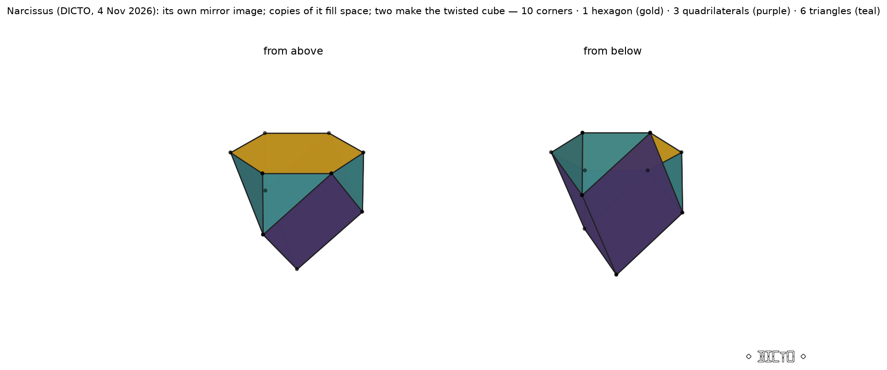
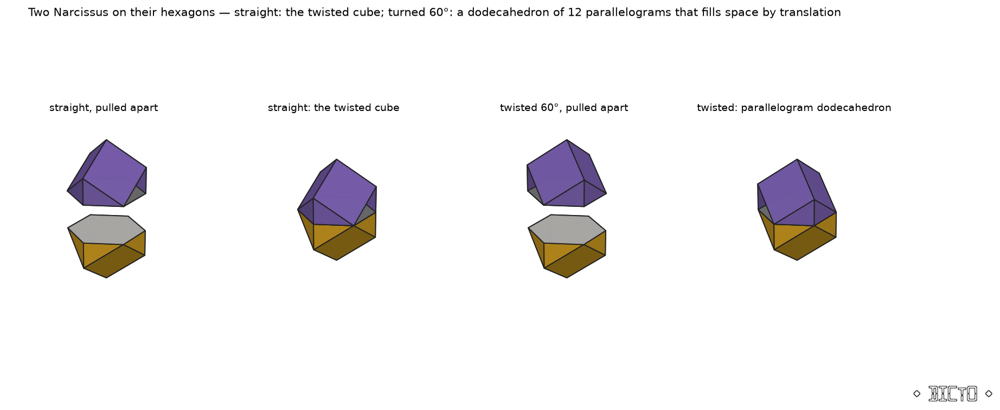
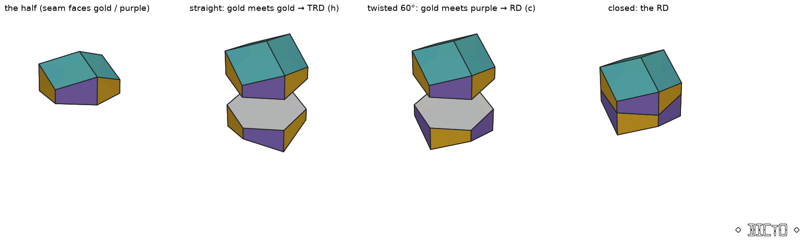
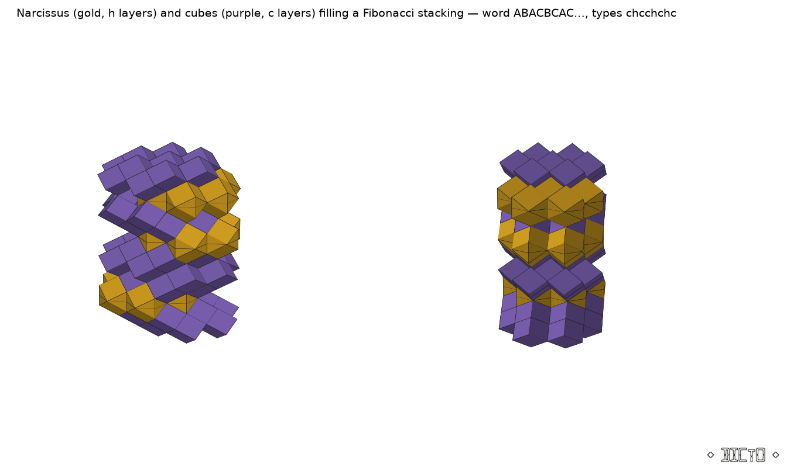

A chapter for HexOct: The Hexagonality Law. Theorem: the HexOct h-tile's piece at the end of the walk, Narcissus, is its own mirror image and fills space alone; two of them joined on their hexagons make the twisted cube when put on straight and Covenant, a parallelogram dodecahedron that fills space by the fcc lattice, when turned 60°; and the Dehn invariants of all HexOct pieces are exact linear functions of the stretch.
Cut a solid in half, and you can put the halves back two ways: as they were, or with one turned. For most solids the turned version has a dent. For a few it does not, and for fewer still it fills space. This chapter is about the few.

One self-mirroring piece, joined to itself two ways, gives two different space-fillers; and the stretch at which the HexOct pieces could start to fill space on their own is fixed by an exact straight line.
At λ = 3/8 the octahedral pieces of #75 shrink to nothing; for every larger λ the h-tile is the same two pieces (the walk saturates). Their corners are: a regular hexagon of side 1/√3 at the height of the next layer (three ball centres of that layer and three holes between them), three corners half a layer lower under the three holes, and one corner on the ball below the hexagon's centre. The faces are one hexagon, three quadrilaterals and six triangles; the dihedral angles are 90°, 120° and 135° only; the volume is √2/4 and the Mahler product exactly 34/3 (rational affine image). Three mirror planes contain its axis; the two copies in an h-tile are the same piece, one turned over. Copies of one piece therefore fill space (Theorem (a)). Within HexOct, Narcissus fills only the h layers: in a c layer the piece is the cube (Theorem (c), checked over all 32 five-layer contexts at λ = 3/8 and 2/5). The every-stacking statement is #86's, read with its tiles halved: two Narcissus make the twisted cube and two cubes the brick of #86's pair A.

Turned by 60°, the union of two Narcissus is convex and centrally symmetric, and all twelve faces are parallelograms. Its edges run in four directions: three mutually orthogonal of length 1/√2 (the small fcc cube's edges) and one along the cube's body diagonal of a third of the diagonal's length. Every convex zonohedron of the five parallelohedron types fills space by translation (Fedorov; see Grünbaum [G]); Covenant's six face-to-face translations all have length 1 and generate the fcc lattice (twelve nearest neighbours at 1, six at √2). In the family of zonohedra of a cube's three edges and c times its body diagonal, c = 0 is the cube, c = 1 the rhombic dodecahedron; Covenant is c = 1/3. Its faces are not rhombi (edges 1/√2 and 1/√6), so it is none of the isozonohedra Grünbaum lists. Caution: in Covenant's tiling only the lower Narcissus of each pair has its corner on a ball; it is an fcc fundamental domain, not a ball-by-ball c-layer cell.
Cut across its three-fold axis through the centre, the rhombic dodecahedron falls into two congruent halves with a regular hexagon as cut, and the trapezo-rhombic dodecahedron (TRD) is made of the very same half: put back straight, the halves make the RD; one turned by 60°, the TRD (classical: Coxeter; the TRD is the RD with one half turned). Read as a standing option, the twist is a free choice per layer and never per cell: twisting one cell's half in a packing leaves gaps and overlaps, and a whole layer twists only if the layers above re-seat over the other holes; with each ball's halves turned to face its actual neighbours, every stacking tested (fcc, hcp, ABCB, ABCACB and the Fibonacci approximant ABACBCAC) is filled with no overlap. This is the law of #92 (one straight-or-twisted choice per layer, for the octet pyramids) for a second set of pieces. In Polyhedraverse, the half wears a two-colour seam: alternating colours across the seam mean the RD, matching colours the TRD (Figure 3).
Which solids can be halved and turned. A band (a prism) put between the two halves keeps every turn convex exactly when the central cut equals the solid's shadow along the axis. The RD satisfies this on its 2-, 3- and 4-fold axes; the truncated octahedron and the cube only on their 2- and 4-fold axes (cut/shadow 0.84 and 0.75 on the 3-fold axis, which is why the truncated octahedron's turned halves are dented). Only a hexagonal cut gives a genuine choice in a tiling, so the banded RD (half, hexagonal prism, half; straight or turned) is a family of space-fillers for every band height and every stacking. A leaning band dents at every lean; leaning a whole layer (a shear) keeps the tiling. Among the classical solids only the cuboctahedron (to J27) and the RD (to the TRD) turn convexly. The Dehn invariant is additive, so every rejoining of two Dehn-zero halves is Dehn-zero; what decides whether a turned solid can tile is the local count of dihedral angles round an edge. The turned B3 permutohedron, for instance, is Dehn-zero but fails that count (a 135° edge with no 90° partner). Halves of different solids with the same cut also rejoin: Narcissus and the RD half share their hexagon, and both of their joins (straight and turned) have only 90°, 120° and 135° dihedrals, so they pass both tests — candidates still to be decided.

Every dihedral angle of every HexOct piece is a rational multiple of π plus a multiple of β = arccos(1/√3): 70.53° = π − 2β, 109.47° = 2β, 125.26° = π − β, 144.74° = π/2 + β, and 90°, 120°, 135°. Squared edge lengths are rational in lattice coordinates, so each length is r√d with r rational and d squarefree. The Dehn invariant is therefore (Σ ce re√de) ⊗ β with integer ce, and is zero exactly when each rational sum Σ ce re over one d vanishes. Computed in exact fractions over the whole walk, only d = 1 occurs, and the sums are the straight lines of Theorem (d): 36(5/24 − λ) for the h pieces below 5/24 and 0 from 5/24 on; 24(3/8 − λ) for the c pieces. The octahedral and tetrahedral pieces of each tile carry opposite values, so every whole tile has Dehn invariant zero, as it must. The two special stretches of HexOct are the two zeros: 5/24, where the h pieces could begin to fill space alone, and 3/8, where the c pieces become cubes and the h pieces Narcissus.

Known: the RD/TRD relation and the Voronoi cells of the close packings (Coxeter; standard), the ortho/gyro operation (Johnson 1966), the space-filling of every parallelohedron-type zonohedron (Fedorov; Grünbaum), the stackings filled by #86's pair A, and the per-layer law for the octet pyramids (#92). Known in type (prior-art search, 5 November 2026): every convex zonohedron with four zones is combinatorially Kepler's rhombic dodecahedron and a parallelohedron (Fedorov 1885; Grünbaum 2010), so Covenant belongs to a classical type; in its family (the cube's three edge directions plus a fourth along a body diagonal, at a fraction c of the diagonal) the fraction c is an affine invariant, c = 1 being Kepler's dodecahedron and c = 1/3 Covenant. Narcissus, half of Covenant cut through its hexagonal waist, has ten faces (one hexagon, three quadrilaterals, six triangles), ten corners and eighteen edges, polyhedron formula 1036-64 in Goldberg's notation. Its combinatorial type is Goldberg's space-filler 10-XII (1982), the type whose hexagon is ringed by six triangles, which he builds by joining two opposite-hand heptahedra 7-XXIX at their lateral faces (7-XXIX: one of eight heptahedra cut from a regular triangular prism, Goldberg 1978). The other type with the same formula, 10-XIII (half of the pencil cube), rings its hexagon with triangles and quadrilaterals and is not this one. The type is therefore known as a space-filler. Narcissus also has the form of Goldberg's construction: cut on any of its three mirror planes, it splits into two mirror-image heptahedra, each of volume √2/8 (computed). Whether these halves are his 7-XXIX, and so whether Narcissus is metrically a member of his 10-XII class, needs the 1978 paper, which is not freely available and not yet read. Half of the rhombic dodecahedron is a different type (thirteen corners, one hexagon and nine quadrilaterals). New within the sources checked: Narcissus as this particular metric heptahedron, self-mirroring and filling space alone; its two joins, the twisted cube and Covenant as the c = 1/3 member of the four-zone family; the "cut equals shadow" criterion for banded turns; and the exact Dehn lines of the HexOct pieces. Open: whether the h-piece fills space alone for 5/24 ≤ λ < 3/8, where both necessary conditions (Dehn zero, the edge-angle count) hold.
[G] B. Grünbaum, The Bilinski dodecahedron and assorted parallelohedra, zonohedra, monohedra, isozonohedra and otherhedra (2010). — E. S. Fedorov, Начала учения о фигурах (Elements of the Study of Figures), St Petersburg (1885). — M. Goldberg, On the space-filling heptahedra, Geometriae Dedicata 7 (1978) 175–184. — M. Goldberg, On the space-filling decahedra, Structural Topology 7 (1982) 39–44 (free copy: upcommons.upc.edu/handle/2099/990). — N. W. Johnson, Convex polyhedra with regular faces (1966). — H. S. M. Coxeter, Regular Polytopes. — DICTO, HexOct (#75), The HexOct Family (#86, draft), Aristotle's Pyramid in Layers (#92 v2).